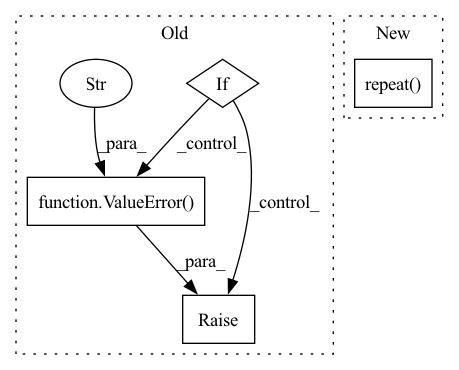

Pattern ID :6535
Before Change
if output_attentions:
raise ValueError("output_attetntions=True is not supported " "for IPUWav2Vec2Encoder")
if output_hidden_states:
raise ValueError("output_hidden_states=True is not supported " "for IPUWav2Vec2Encoder" )
pad_length = 0
if attention_mask is not None:
// make sure padded tokens output 0After Change
if attention_mask is not None:
// make sure padded tokens output 0
expand_attention_mask = attention_mask.unsqueeze(-1).repeat( 1, 1, hidden_states.shape[2])
hidden_states[~expand_attention_mask] = 0
// extend attention_mask
attention_mask = (1.0 - attention_mask[:, None, None, :].to(dtype=hidden_states.dtype)) * -10000.0In pattern: SUPERPATTERN
Frequency: 3
Non-data size: 4
Instances Fragment ID: 22588504
Project Name: huggingface/optimum-graphcore
Commit Name: 075200de7b5b118681fc46af97985bb53ce9c146
Time: 2022-08-03
Author: gejinchen1996@gmail.com
File Name: optimum/graphcore/models/wav2vec2/ipu_layer_drop.py
M Class Name: IPUWav2Vec2Encoder
N Class Name: IPUWav2Vec2Encoder
M Method Name: forward(6)
N Method Name: forward(6)
M Parent Class: Wav2Vec2Encoder
N Parent Class: Wav2Vec2Encoder
M File Name: optimum/graphcore/models/wav2vec2/ipu_layer_drop.py
N File Name: optimum/graphcore/models/wav2vec2/ipu_layer_drop.py
M Start Line: 41
M End Line: 108
N Start Line: 41
N End Line: 83
Before Change
device: constants.DeviceType = None,
requires_grad: bool = False,
) -> torch.Tensor:
if len(size) != 1:
raise ValueError("The size should be 1D." )
ret = torch.eye(3, device=device, dtype=dtype).repeat(size[0], 1, 1)
ret.requires_grad_(requires_grad)
return ret
After Change
device: constants.DeviceType = None,
requires_grad: bool = False,
) -> torch.Tensor:
ret = torch.eye(3, device=device, dtype=dtype).repeat( size + (1, 1))
ret.requires_grad_(requires_grad)
return ret
Fragment ID: 22588498
Project Name: facebookresearch/theseus
Commit Name: 6275951cff1fd0152ad84fc4f93e25cb32d9efae
Time: 2023-05-03
Author: 6612911+fantaosha@users.noreply.github.com
File Name: theseus/labs/lie/functional/so3_impl.py
M Class Name: AnonimousClass
N Class Name: AnonimousClass
M Method Name: identity(0)
N Method Name: identity(0)
M Parent Class:
N Parent Class:
M File Name: theseus/labs/lie/functional/so3_impl.py
N File Name: theseus/labs/lie/functional/so3_impl.py
M Start Line: 188
M End Line: 190
N Start Line: 182
N End Line: 182
Before Change
if output_attentions:
raise ValueError("output_attetntions=True is not supported " "for IPUWav2Vec2EncoderStableLayerNorm")
if output_hidden_states:
raise ValueError("output_hidden_states=True is not supported " "for IPUWav2Vec2EncoderStableLayerNorm" )
pad_length = 0
if attention_mask is not None:
// make sure padded tokens output 0After Change
if attention_mask is not None:
// make sure padded tokens are not attended to
expand_attention_mask = attention_mask.unsqueeze(-1).repeat( 1, 1, hidden_states.shape[2])
hidden_states[~expand_attention_mask] = 0
// extend attention_mask
attention_mask = (1.0 - attention_mask[:, None, None, :].to(dtype=hidden_states.dtype)) * -10000.0 Fragment ID: 22588499
Project Name: huggingface/optimum-graphcore
Commit Name: 075200de7b5b118681fc46af97985bb53ce9c146
Time: 2022-08-03
Author: gejinchen1996@gmail.com
File Name: optimum/graphcore/models/wav2vec2/ipu_layer_drop.py
M Class Name: IPUWav2Vec2EncoderStableLayerNorm
N Class Name: IPUWav2Vec2EncoderStableLayerNorm
M Method Name: forward(6)
N Method Name: forward(6)
M Parent Class: Wav2Vec2EncoderStableLayerNorm
N Parent Class: Wav2Vec2EncoderStableLayerNorm
M File Name: optimum/graphcore/models/wav2vec2/ipu_layer_drop.py
N File Name: optimum/graphcore/models/wav2vec2/ipu_layer_drop.py
M Start Line: 127
M End Line: 193
N Start Line: 101
N End Line: 144